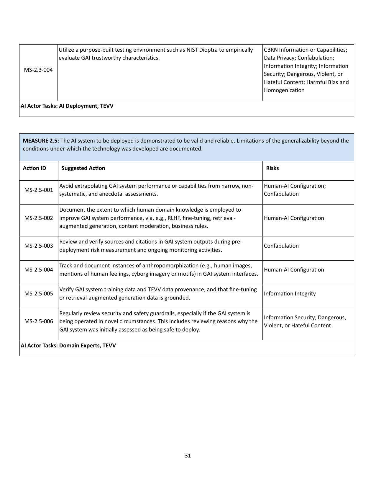
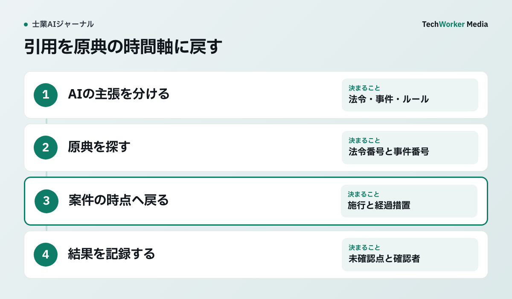

法令番号・事件番号から原典へ戻る
AIの主張を一文ずつ分け、法令番号・条番号はe-Gov、事件番号は裁判所の原文と照合します。案件の基準日も確認します。米国国立標準技術研究所（NIST）の下表は、出典・引用の検証を導入前から運用中まで続けるよう示しています。

NISTは日本の士業に直接適用される法令ではありません。それでも、狭い試験の成功を業務全体へ広げないこと、生成物の出典・引用を確認し続けることは、法令・判例、期限候補、OCR、翻訳を扱う共通の設計原則になります。
候補を4列に分けて原典へ戻る
AIの文章を「主張」「識別情報」「原典」「案件への適用」に分け、空欄を推測で埋めません。

- 主張を一文ずつ分ける。条文、事件、期限、数値、訳語を別行にします。
- 識別情報を取る。法令番号、条番号、事件番号、文書名、ページ、原文位置を記録します。
- 原典を開く。法令は基準日・施行日・経過措置、判例は結論だけでなく理由と掲載範囲を読みます。
- 案件への適用を人が決める。事実関係、例外、職業規則を確認し、未確認は未確認のまま残します。
期限・OCR・翻訳も同じ台帳で確認する
原典の位置と確認者を残す同じ型は、期限、OCRによる文字読取り、翻訳にも使えます。どの出力も確認前は候補として扱います。
| 対象 | AIに任せる範囲 | 人が確認する点 |
|---|---|---|
| 期限候補 | 日付、期限種別、起算点候補、不明点の抽出 | 起算点、休日、条件、変更通知。確定後に案件台帳へ登録 |
| AI-OCR | 文字・項目・原本位置・信頼度の抽出 | 日付の意味、金額の桁、氏名、選択欄。重要項目は二人目も確認 |
| AI翻訳 | 対訳下書きと用語候補 | 否定、義務・裁量、期限、固有名、原文と訳文の対応 |
たとえば通知文の「10月15日」は、提出期限とは限りません。文書作成日か、回答予定日か、条件付きの期限かを周辺文と差替版で確認します。OCRが正しく日付を読めても意味は確定しません。翻訳が自然でも、shallとmayの違いや否定の範囲が変われば使えません。
確認済みだけを正本へ移す
候補表、案件台帳、通知用カレンダーを分け、正本は確認済みの案件台帳にします。
確認記録には、出力、原典URLまたは保存先、原文位置、基準日、確認結果、未確認点、確認者、確認日を残します。OCRでは「未確認・原本一致・訂正・判断保留」、期限では「候補・確定・変更・取消」の状態を使うと、候補が確定値へ紛れません。
期限を変更しても旧記録は消しません。OCRの信頼度は一律の自動登録基準にせず、対外送信する翻訳は原文と訳文を照合できる状態で保存します。抽出件数や翻訳速度ではなく、誤登録、未登録、差戻し、原文へ戻れない件数を測ります。
よくある質問
使いません。主張、識別情報、原典、案件への適用を分け、法令は基準日と改正、判例は事件番号と理由まで確認します。
期限、金額、氏名、識別番号など影響が大きい項目は省けません。信頼度は確認箇所を絞る材料で、正しさの証明ではありません。
固有名、否定、条件、期限、義務と裁量の強さを原文と対照し、対外送信や権利義務に使う文書は専門家が確認します。
一次情報と確認範囲
資料確認日：2026年10月6日。NISTは任意の国際的資料で、日本の法令・職業規則の代わりにはなりません。